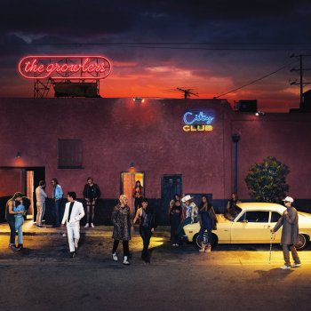

|  |
LetraCity ClubThe Growlers |
She lives in pans at the end of this prison
The love sprouts from the decay
The night's pulsing, streets are convulsing
Dark libations through the bray
I stop trying to make sense of it all
Start sniffing around the continous strife
Grab fear by a strange hand
Sweet neglection in her own right
I wouldn't change a
I love her just the way she is
I'll love her flaws and friends
Don't care what anybody says about her
she has a spear and a vow of mother noture
You'll never know what she'll do
Hardened from her mysterious sun
I'm not a muse, I play the fool
I stop trying to make sense of it all
Start dancing around the continous strife
Grab fear by a strange hand
Keep her cool under the pale moonlight
I wouldn't change a
I love her just the way she is
I'll love her flaws and friends
Don't care what anybody says
I wouldn't change a
I love her just the way she is
I'll love her flaws and friends
Don't care what anybody says about her